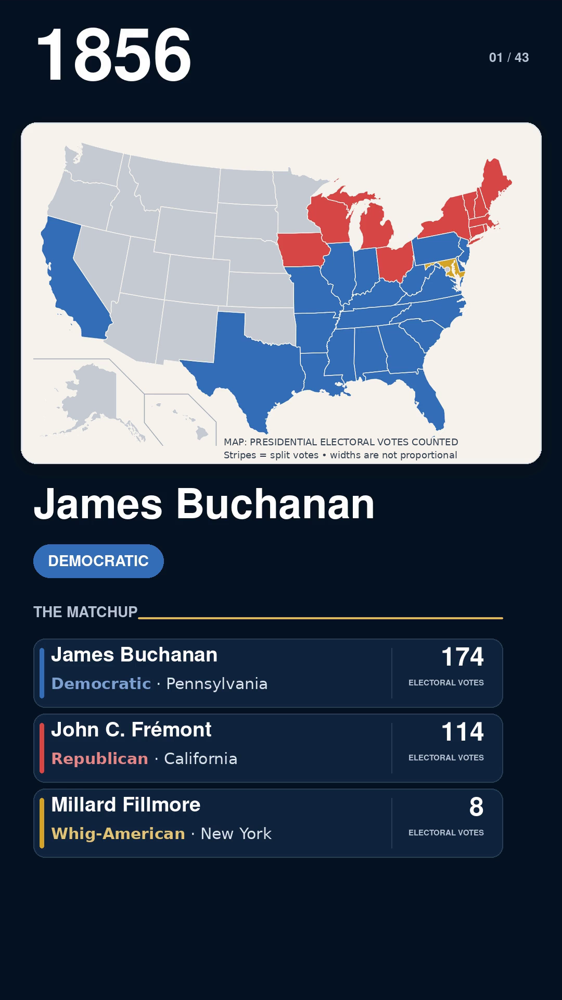

1856–2024
Presidential Elections

1856 election winnerJames Buchanan
| Candidate | Electoral votes |
|---|---|
| James Buchanan | 174 |
| John C. Frémont | 114 |
| Millard Fillmore | 8 |
1860 election winnerAbraham Lincoln
| Candidate | Electoral votes |
|---|---|
| Abraham Lincoln | 180 |
| John C. Breckinridge | 72 |
| John Bell | 39 |
| Stephen A. Douglas | 12 |
1864 election winnerAbraham Lincoln
| Candidate | Electoral votes |
|---|---|
| Abraham Lincoln | 212 |
| George B. McClellan | 21 |
1868 election winnerUlysses S. Grant
| Candidate | Electoral votes |
|---|---|
| Ulysses S. Grant | 214 |
| Horatio Seymour | 80 |
1872 election winnerUlysses S. Grant
| Candidate | Electoral votes |
|---|---|
| Ulysses S. Grant | 286 |
| Thomas A. Hendricks | 42 |
| Benjamin Gratz Brown | 18 |
| Charles J. Jenkins | 2 |
| David Davis | 1 |
Grant’s main opponent, Horace Greeley, died before the electors voted. Congress rejected the three votes cast for him.
Election record at the National Archives1876 election winnerRutherford B. Hayes
| Candidate | Electoral votes |
|---|---|
| Rutherford B. Hayes | 185 |
| Samuel J. Tilden | 184 |
1880 election winnerJames A. Garfield
| Candidate | Electoral votes |
|---|---|
| James A. Garfield | 214 |
| Winfield S. Hancock | 155 |
1884 election winnerGrover Cleveland
| Candidate | Electoral votes |
|---|---|
| Grover Cleveland | 219 |
| James G. Blaine | 182 |
1888 election winnerBenjamin Harrison
| Candidate | Electoral votes |
|---|---|
| Benjamin Harrison | 233 |
| Grover Cleveland | 168 |
1892 election winnerGrover Cleveland
| Candidate | Electoral votes |
|---|---|
| Grover Cleveland | 277 |
| Benjamin Harrison | 145 |
| James B. Weaver | 22 |
1896 election winnerWilliam McKinley
| Candidate | Electoral votes |
|---|---|
| William McKinley | 271 |
| William J. Bryan | 176 |
1900 election winnerWilliam McKinley
| Candidate | Electoral votes |
|---|---|
| William McKinley | 292 |
| William J. Bryan | 155 |
1904 election winnerTheodore Roosevelt
| Candidate | Electoral votes |
|---|---|
| Theodore Roosevelt | 336 |
| Alton B. Parker | 140 |
1908 election winnerWilliam H. Taft
| Candidate | Electoral votes |
|---|---|
| William H. Taft | 321 |
| William J. Bryan | 162 |
1912 election winnerWoodrow Wilson
| Candidate | Electoral votes |
|---|---|
| Woodrow Wilson | 435 |
| Theodore Roosevelt | 88 |
| William H. Taft | 8 |
1916 election winnerWoodrow Wilson
| Candidate | Electoral votes |
|---|---|
| Woodrow Wilson | 277 |
| Charles E. Hughes | 254 |
1920 election winnerWarren G. Harding
| Candidate | Electoral votes |
|---|---|
| Warren G. Harding | 404 |
| James M. Cox | 127 |
1924 election winnerCalvin Coolidge
| Candidate | Electoral votes |
|---|---|
| Calvin Coolidge | 382 |
| John W. Davis | 136 |
| Robert M. La Follette | 13 |
1928 election winnerHerbert Hoover
| Candidate | Electoral votes |
|---|---|
| Herbert Hoover | 444 |
| Alfred E. Smith | 87 |
1932 election winnerFranklin D. Roosevelt
| Candidate | Electoral votes |
|---|---|
| Franklin D. Roosevelt | 472 |
| Herbert C. Hoover | 59 |
1936 election winnerFranklin D. Roosevelt
| Candidate | Electoral votes |
|---|---|
| Franklin D. Roosevelt | 523 |
| Alfred M. Landon | 8 |
1940 election winnerFranklin D. Roosevelt
| Candidate | Electoral votes |
|---|---|
| Franklin D. Roosevelt | 449 |
| Wendell L. Willkie | 82 |
1944 election winnerFranklin D. Roosevelt
| Candidate | Electoral votes |
|---|---|
| Franklin D. Roosevelt | 432 |
| Thomas E. Dewey | 99 |
1948 election winnerHarry S. Truman
| Candidate | Electoral votes |
|---|---|
| Harry S. Truman | 303 |
| Thomas E. Dewey | 189 |
| J. Strom Thurmond | 39 |
1952 election winnerDwight D. Eisenhower
| Candidate | Electoral votes |
|---|---|
| Dwight D. Eisenhower | 442 |
| Adlai Stevenson | 89 |
1956 election winnerDwight D. Eisenhower
| Candidate | Electoral votes |
|---|---|
| Dwight D. Eisenhower | 457 |
| Adlai Stevenson | 73 |
1960 election winnerJohn F. Kennedy
| Candidate | Electoral votes |
|---|---|
| John F. Kennedy | 303 |
| Richard M. Nixon | 219 |
| Harry F. Byrd | 15 |
1964 election winnerLyndon B. Johnson
| Candidate | Electoral votes |
|---|---|
| Lyndon B. Johnson | 486 |
| Barry M. Goldwater | 52 |
1968 election winnerRichard M. Nixon
| Candidate | Electoral votes |
|---|---|
| Richard M. Nixon | 301 |
| Hubert H. Humphrey | 191 |
| George C. Wallace | 46 |
1972 election winnerRichard M. Nixon
| Candidate | Electoral votes |
|---|---|
| Richard M. Nixon | 520 |
| George McGovern | 17 |
1976 election winnerJimmy Carter
| Candidate | Electoral votes |
|---|---|
| Jimmy Carter | 297 |
| Gerald Ford | 240 |
1980 election winnerRonald Reagan
| Candidate | Electoral votes |
|---|---|
| Ronald Reagan | 489 |
| Jimmy Carter | 49 |
| John Anderson | 0 |
1984 election winnerRonald Reagan
| Candidate | Electoral votes |
|---|---|
| Ronald Reagan | 525 |
| Walter Mondale | 13 |
1988 election winnerGeorge H. W. Bush
| Candidate | Electoral votes |
|---|---|
| George H. W. Bush | 426 |
| Michael Dukakis | 111 |
1992 election winnerBill Clinton
| Candidate | Electoral votes |
|---|---|
| Bill Clinton | 370 |
| George H. W. Bush | 168 |
| Ross Perot | 0 |
1996 election winnerBill Clinton
| Candidate | Electoral votes |
|---|---|
| Bill Clinton | 379 |
| Bob Dole | 159 |
| Ross Perot | 0 |
2000 election winnerGeorge W. Bush
| Candidate | Electoral votes |
|---|---|
| George W. Bush | 271 |
| Al Gore | 266 |
| Ralph Nader | 0 |
2004 election winnerGeorge W. Bush
| Candidate | Electoral votes |
|---|---|
| George W. Bush | 286 |
| John Kerry | 251 |
2008 election winnerBarack Obama
| Candidate | Electoral votes |
|---|---|
| Barack Obama | 365 |
| John McCain | 173 |
2012 election winnerBarack Obama
| Candidate | Electoral votes |
|---|---|
| Barack Obama | 332 |
| Mitt Romney | 206 |
2016 election winnerDonald J. Trump
| Candidate | Electoral votes |
|---|---|
| Donald J. Trump | 304 |
| Hillary Clinton | 227 |
| Gary Johnson | 0 |
2020 election winnerJoseph R. Biden Jr.
| Candidate | Electoral votes |
|---|---|
| Joseph R. Biden Jr. | 306 |
| Donald Trump | 232 |
2024 election winnerDonald J. Trump
| Candidate | Electoral votes |
|---|---|
| Donald J. Trump | 312 |
| Kamala Harris | 226 |